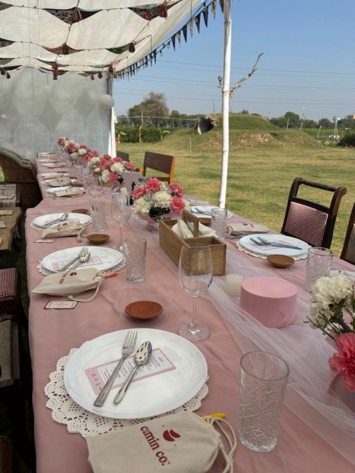
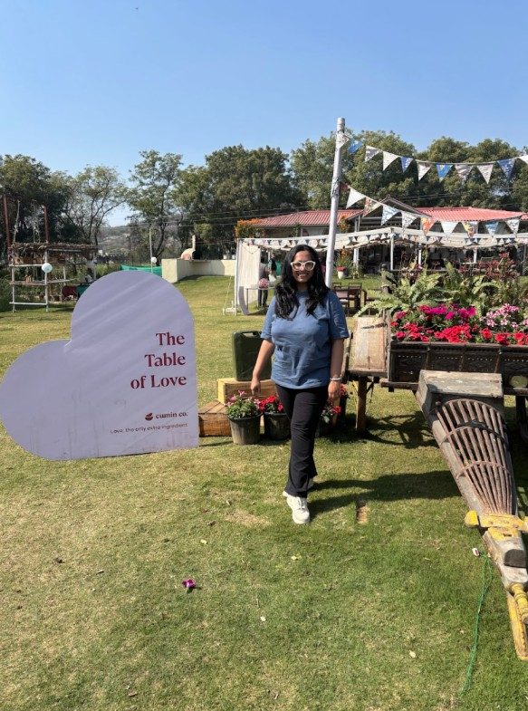
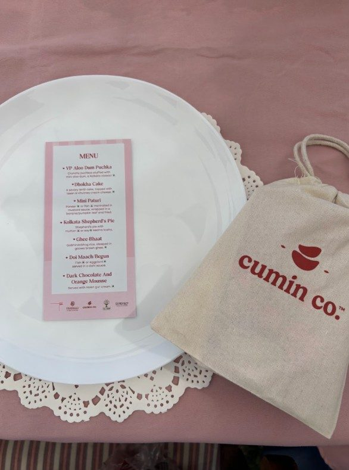
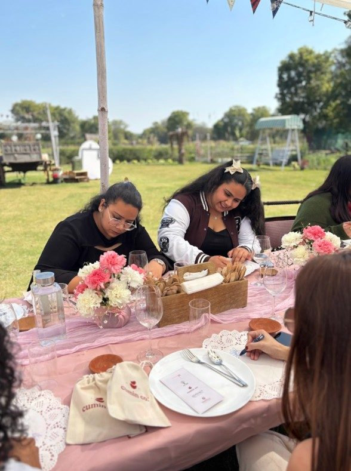
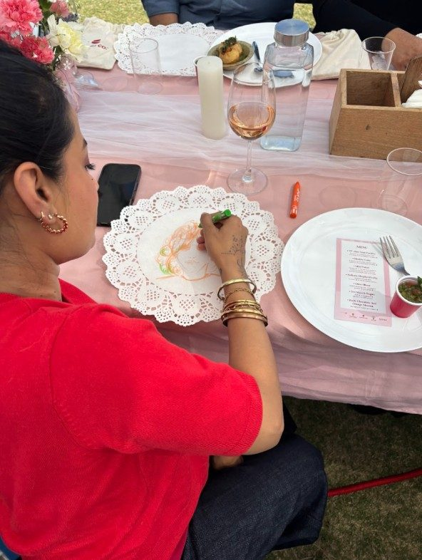
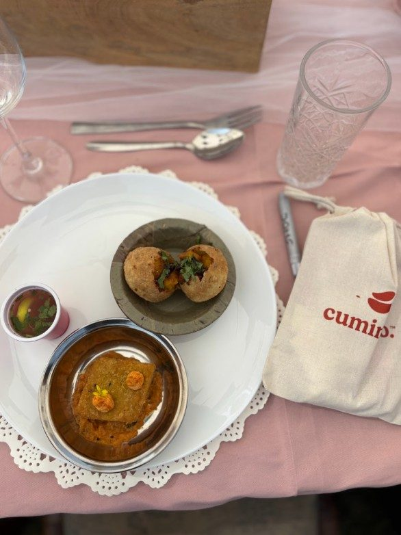
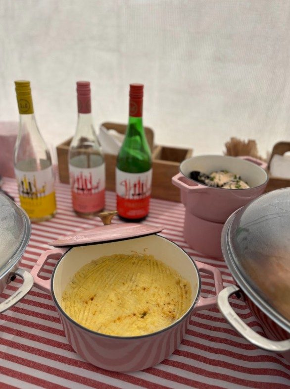

Toontooni's Table × Cumin Co.
The Table of Love: A Modern Bengali Valentine's Day Supper Club

Love, at our Valentine's Day supper club, sounded like the clinking of wine glasses and the steady hum of conversations at a weekend adda.
Toontooni's Table hosted the Table of Love, in collaboration with Cumin Co., a seven-course exploration of modern Bengali flavours designed to celebrate love in all its forms. Whether our guests arrived as couples, friends, or solo explorers, they all left as part of the same story.
A Slow Lunch under the Winter Sun
Set against the rustic, open-air backdrop of The Farm Collective, the afternoon was a deliberate departure from the hurried pace of the city. We curated a cosy lunch under the winter sun with lots of delicious food.
The Menu: Tradition Meets Innovation
We paired heritage Bengali recipes with contemporary techniques to create a menu that felt both familiar and new. From Kolkata Shepherd's Pie to our Dark Chocolate & Orange Mousse with Nolen Gur Cream, every dish was a conversation starter.
Our Partners in Crafting the Experience
An event of this scale is a symphony of artisanal excellence and quality.
- Cumin Co. — Provided the stunning backdrop for our menu with their beautiful, functional pieces that transitioned effortlessly from the stove to the table.
- Fratelli Wines — Set the tone for the celebration with their delicious pours, perfectly paired for a long, leisurely lunch.
- Sepoy & Co. — Kept the afternoon crisp and refreshing with their botanical mixers and tonic waters.
- Home Kouzina — Brought an authentic flavour to our pantry, grounding our modern techniques in traditional roots.
- Gramiya — Provided artisanal staples that served as the essential building blocks for our dishes.
Beyond the plates, the real magic was watching forty strangers lose track of time. At Toontooni's Table, we create experiences for those who crave depth — both on the plate and in the room.
Moments from the Event





